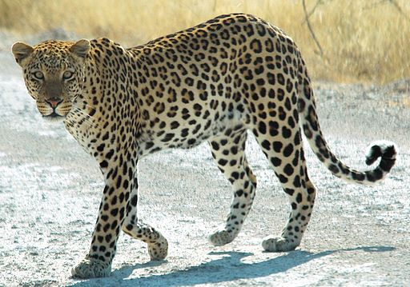
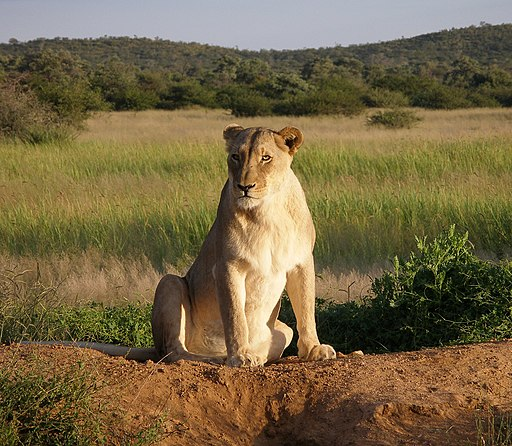
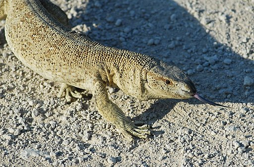
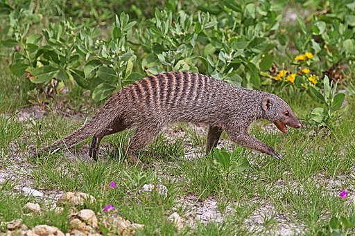
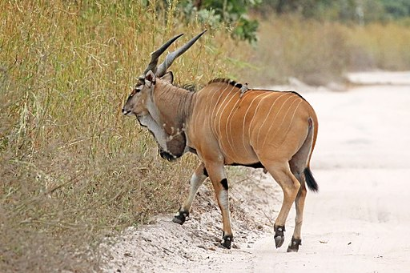

Savanna Animals
African Leopard
Leopards vary in size and markings. Average head-body length is is 210cm and weight 50 - 90kg. Leopards are carnivorous, the diet ranges from arthropods and small rodents to antelopes, depending on what is available.
Patrick Giraud (edited to fix white balance), CC BY-SA 3.0, via Wikimedia Commons
{kind=link}
Lion
Female lions are 160 - 184cm long whilst males are 184 - 208cm long. Lionesses weigh between 118 and 143kg, males between 186 and 225kg. Lions subsist mostly on large herbivores such as plains zebra and giraffe. Lions also eat carrion. Male lions tend to hunt solo, whilst females tend to hunt in groups for larger prey. Lions live together in small groups (prides) of about 15 individuals.
Falense, CC BY-SA 3.0, via Wikimedia Commons
{kind=link}
Angolan White-throated Monitor
The angolan white-throated monitor is upto 1.5mtrs in length. It is a predatory creature and feeds on a wide variety of animals, from invertebrates to snakes and rodents as well as carrion.
Jean-Louis Vandevivère, CC BY-SA 2.0, via Wikimedia Commons
{kind=link}
Banded Mongoose
The banded mongoose is from 30 to 45cm long and weighs from 1.5 to 2.25Kg. It subsists of beetles and millipedes. It digs burrows for shelter and unlike other mongooses is a social animal.
Charles J. Sharp, CC BY-SA 4.0, via Wikimedia Commons
.jpg){kind=link}
Giant Eland
The giant eland is the largest species of antelope. It has a body length of 220 to 290cm and weighs an average of 650kg. The giant eland is a herbivore with a diet of grasses, foliage and branches. They usually form herds of between 15 and 25 individuals.
Charles J. Sharp, CC BY-SA 4.0, via Wikimedia Commons
_male.jpg){kind=link}
Rough-scaled Bush Viper
The male bush vipers are upto 73cm long, females upto 58cm. It's diet consists of small mammals, frogs, lizards and sometimes small birds. It is a venomous snake.

Bree Mc, soulsurvivor08 at flickr.com, CC BY 2.0, via Wikimedia Commons
{kind=link}